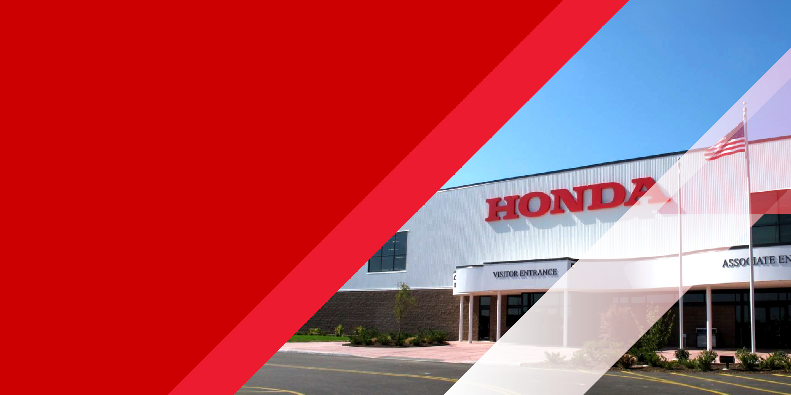

Your Voice Is Our Strength:
Q&A
Your Voice Is Our Strength:
Inspiring Honda’s Future.
-
Why is the UAW trying to convince Honda associates to join the union?
The simple answer is money … for the union. The UAW is trying to increase their dues paying members. A UAW official stated, “If we don’t organize these transnationals, I don’t think there’s a long-term future for the UAW, I really don’t.” We know the UAW’s wide margins of defeat in recent elections at other automakers were further setbacks in the UAW’s efforts to grow their membership. -
What is the UAW?
The UAW is a business. UAW revenues, estimated at $290 million annually, come primarily from their members. Because membership has declined from 1.5 million to a little over 400,000 in the last 30+ years, they need new members. Their campaign is an attempt to convince Honda associates of the value and quality of their representation. Union dues vary, but the typically cost unionized employees a full 2 ½ hours of pay per month – which equals nearly one week’s worth of work annually. Do you really want to lose a week’s worth of pay every year? -
How does a UAW organizing campaign work?
The UAW is paying union organizers to come here to recruit Honda associates. The organizers operate much like salespeople and will make claims, raise issues and offer promises. Their claims may be directed at individuals and may not be accurate. Each associate must carefully evaluate the UAW’s claims and promises against Honda’s record and the UAW’s record. -
Can the UAW make good on their promises?
While a union can make promises, its ability to deliver on those promises depends on collective bargaining. The bargaining process can have a variety of outcomes, none of which is guaranteed. One thing the UAW cannot promise is job security. Their record clearly shows work stoppages due to strikes and plant closures, even layoffs after signing new collective bargaining agreements. -
Can materials about a union campaign be distributed at Honda locations?
Freedom of speech is a fundamental principle that applies in any union campaign. Associates who are supportive – or not supportive – of the union’s efforts may distribute literature at Honda locations. Non-Honda associates are not permitted to distribute literature on Honda property. They can distribute material on public property subject to local safety laws or online. -
Is Honda surprised by this new organizing effort?
Since Honda associates are the best and most secure workforce in the auto industry, it’s easy to see why the UAW would want the steady income from our associates. It is well documented that the UAW is suffering, after losing more than 70% of its dues paying members in the past 30+ years due to layoffs, retirements and plant closings. -
How long will this new effort last?
This campaign will last as long as the UAW wants it to last. While this type of activity can be disruptive, it is permissible within the bounds of U.S. labor law. -
What does Honda ask associates to consider and do?
We have built our success together, with unequaled job security, by working together as one Honda team. We ask associates to do two things: know the facts and respect each other. Associates are not only encouraged – you are permitted by law – to ask questions about a claim made by the UAW or about information provided by the union. Your leaders and other management members are available to talk with you about UAW activity or answer any other questions you have. -
Where does the UAW get the information for its complaints about Honda?
Many of the accusations made by the UAW take a cookie cutter, one-size-fits-all approach – despite the fact that none of it applies to Honda. Using arguments based on the experience of UAW workers at other automakers is not productive. Honda has an outstanding record of working directly with its associates to advance safety in the workplace and to improve production processes to make our products easier to build. There is no reason to change this collaborative and successful approach.